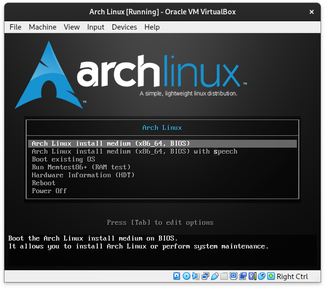
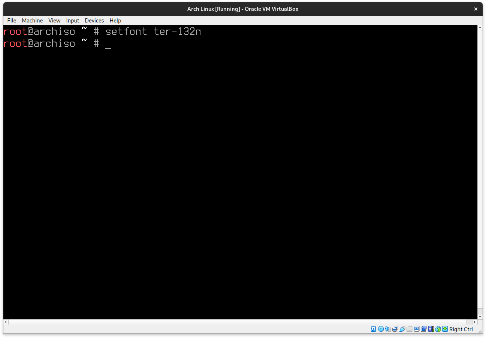
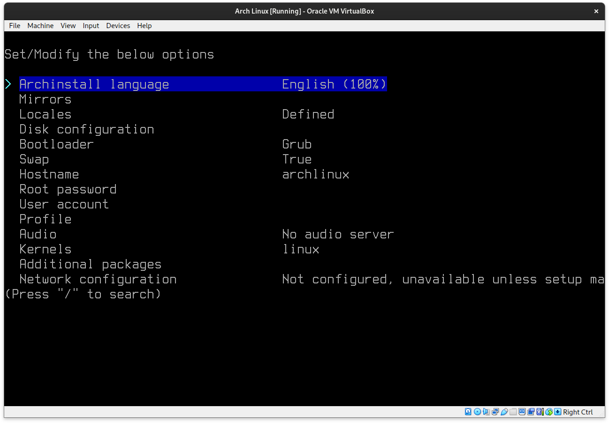

Simple Arch Linux install
I promise this isn't as bad as doing it all manually!
This tutorial will guide you through the process of installing Arch Linux using the `archinstall` script and setting up GNOME as the desktop environment.
Feel free to select another option in the installer if you would like to test out another desktop environment.
My suggestion first off would be to download the ISO file for Arch from HERE
If you would prefer a direct download check HERE
If you download the ISO directly, MAKE SURE YOU VERIFY the ISO first! Someone may be hosting a compromised version on their web server and you don't want that!
Once that's done, flash the ISO onto a USB drive etc.
Step 1: Boot from the Arch Linux Installation Media
Begin by booting your computer from the Arch Linux installation media (Presuming you already have a bootable drive with Arch installed on it). Once booted, you'll be presented with the Arch Linux boot menu.
Select Arch Linux install medium and hit Enter.
If you cant see and the font is too small, try entering this command to switch the font type and size for smaller screens:
setfont ter-132n
It should now look something like this:
Step 2: Connect to the Internet
Ensure your computer is connected to the internet. You can connect to a Wi-Fi network if you are on a laptop using the `iwctl` command, if you are hard wired, just enter the ping command as shown below:
iwctl
The following code scans for wireless devices on your hardware (if your hardware is called wlan0):
station wlan0 scan
This command will list available networks within range (replace device with your device name, it might be wlan0 or something similar from the code we entered above):
station wlan0 get-networks
No connect to your network with the following command:
station wlan0 connect "Your Network Name"
It should then prompt you for your network password to log in, enter this and you should be connected.
Now let's double check that it's connected properly, exit out of iwctl by entering:
exit
Then run a ping command to test if you are connected to the internet:
ping google.com
You should see it returning responses with 0% packet loss, if you see nothing returning, start again with step 1, it may not be connected correctly.
Step 3: Run Archinstall
Once you're connected to the internet, run the `archinstall` script to begin the installation process:
archinstall
You should now see something like this:
Follow the prompts to configure your installation. When asked for a desktop environment, choose GNOME.
Archinstall language:
Self explanatory.
Mirrors:
Choose a mirror closest to your location, i.e., Europe/Berlin for instance if you live in Germany. This way you get the fastest mirrors nearest to you for updates etc.
Locales:
For locales, select the locales you want for your region or layout.
Disk Configuration:
You can select your main disk if you would like, and can proceed with btrfs, default structure and compression as is.
I would also recommend setting up disk encryption with a decently strong password, this way nobody can access the drive should they get ahold of the device.
Bootloader, Swap and Hostname:
These can be left alone unless you want to modify those or change the system name from the default of archlinux.
Root Password:
Make sure to set a strong user password, not 12345...
User Account:
Set up an account and a password to be able to login to the Gnome desktop environment in this case.
If you want your user to be able to run commands as root, select yes for making your user a superuser.
Profile:
This is where you choose your profile type. Desktop, Server, Minimal, or Xorg. We will select Desktop for the purposes of this tutorial.
Scroll down to Gnome and hit tab to select it and press Enter.
For Graphics Driver, select the relevant option for your device on your laptop.
You can leave the Greeter as gdm.
Audio:
Select pipewire here.
Network configuration:
Select NetworkManager.
Timezone:
Select a relevant timezone for you, i.e., Europe/Berlin etc.
Finally:
Navigate down to install at the bottom and hit enter.
It will ask you if you would like to chroot into the newly installed system, hit no.
You should see the following screen without any error.

Once the installer finishes without any errors, you are done! You should be able to restart the system into your new Arch Linux installation.
Step 4: Reboot into Your New System
After the installation is complete, reboot your computer. Remember to remove the installation media so that you boot into your new Arch Linux installation rather than the live environment.
reboot
Step 5: Log in and Enjoy GNOME
Upon reboot, you should be greeted with the GDM login screen, courtesy of GNOME. Log in using the credentials you set during the installation.
Conclusion
Congratulations! You have successfully installed Arch Linux with the GNOME desktop environment using `archinstall`. I hope this process was easy enough to follow and I hope you enjoyed it! Stay tuned for more tutorials.